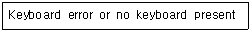
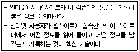

PC정비사-2급 (2007-01-28 기출문제)
1과목: PC유지보수
1. PC 조립 시 연결하지 않으면 시스템에 치명적인 문제를 발생시킬 수도 있는 것은?
- HDD LED 커넥터
- Power LED 커넥터
- CPU 쿨러 커넥터
- CD-ROM 사운드 케이블
(정답률: 88%)

2. E-IDE 방식의 하드디스크만 지원되는 메인보드에서 E-IDE 슬롯이 2개 있을 때, 확장 카드나 USB 등의 외장기기를 사용하지 않고 최대로 연결할 수 있는 하드디스크의 수는?
- 2개
- 3개
- 4개
- 5개
(정답률: 82%)
3. 메인보드의 규격인 BTX에 대한 설명 중 잘못된 것은?
- ATX와 다르게 확장카드슬롯이 위로 올라가고 램 뱅크는 CPU 아래에 위치하고 있다.
- CPU 소켓은 메인보드의 모서리에 대각선으로 위치하고 있다.
- BTX규격은 마이크로 BTX, BTX, BIG BTX 3가지이다.
- ATX에 비해 냉각 성능을 높이고 소음을 줄이는 효과를 나타낸다.
(정답률: 70%)
4. 케이스 전면에 있는 HDD LED가 정상적으로 연결되어 있을 때 확인 할 수 있는 것은?
- HDD 파티션 설정 유무
- HDD MASTER/SLAVE 설정
- HDD 회전속도
- HDD 작동 유무
(정답률: 90%)
5. AWARD BIOS의 CMOS 설정 메뉴 중 "STANDARD CMOS SETUP"에서 설정할 수 없는 것은?
- 컴퓨터 내부 날짜와 시간 설정
- 메모리 스피드 설정
- 하드디스크 타입 설정
- 플로피디스크 드라이브 타입 설정
(정답률: 79%)
6. 플러그 앤 플레이(Plug & Play)기능이 제대로 인식되기 위한 조건으로 올바른 것은?
- 롬 바이오스와 운영체제에서만 지원 가능하면 된다.
- 롬 바이오스와 주변기기에서만 지원 가능하면 된다.
- 롬 바이오스와 운영체제, 주변기기만 지원 가능하면 된다.
- 롬 바이오스와 운영체제, 설치 슬롯만 지원 가능하면 된다.
(정답률: 73%)
7. 컴퓨터뿐만 아니라 각종 전자기기에서 발생하는 인체에 유해한 파장인 전자파를 규제하기 위한 규격이 아닌 것은?
- VDT(Video Display Terminal)
- TCO(The Swedish Confederation of Professional Employees)
- FCC(Federal Communication Committee)
- CE(Certification for the European-union)
(정답률: 86%)
8. 컴퓨터를 부팅할 때 다음과 같은 에러 메시지가 나타난다. 이 메시지가 나타나는 원인과 해결책으로 부적절한 것은?

- 키보드를 초기화 할 수 없는 경우에 나타나는 메시지다.
- 키보드 컨트롤러와 메인보드가 호환되지 않는 경우에도 나타난다.
- 키보드가 고장 난 경우에도 나타날 수 있다.
- CMOS 셋업의 [Halt on] 항목에서 시스템 중지 조건을 'All, But Keyboard'로 설정하면 해결된다.
(정답률: 66%)
9. 처음 구입한 하드디스크를 설치하고, 그 하드디스크로 부팅을 시도할 때 나타나는 메시지로 올바른 것은?
- Serial Presence Detect(SPD) unavailable - memory speed unknown.
- Disk Boot Failure, Insert System Disk And Press Enter
- Invalid configuration information - please run SETUP program
- No ROM Basic System Halted
(정답률: 81%)
10. Windows XP 사용 중에 간혹 마우스가 움직이지 않고 시스템이 다운된 것처럼 갑자기 멈춘 다음 잠시 후 다시 작동된다. 해결방법으로 올바른 것은?
- 파일시스템을 FAT32에서 NTFS로 변경한다.
- 마우스와 키보드 모두 USB로 사용할 경우 발생하므로 둘 중 하나를 PS/2 방식으로 교체한다.
- 메모리 상주하는 시작프로그램과 서비스를 줄이고 불필요한 인터페이스를 제거해 리소스를 확보한다.
- 디스크 검사를 실행해 불량 섹터를 치료하거나 새로운 부트 섹터와 마스터 부트 레코드(MBR)를 만들어 해결한다.
(정답률: 72%)
11. Windows XP에서 프로그램이나 파일 삭제에 대한 내용 중 잘못된 것은?
- 로컬 디스크상의 파일을 아무 옵션 없이 지우면 “휴지통”으로 이동한다.
- “휴지통”에 보관된 파일은 “휴지통”내에서 자동으로 삭제되지 않은 한 원래 상태로 복구할 수 있다.
- 프로그램은 제어판의 “프로그램 추가/제거”메뉴를 이용하여 삭제한다.
- “프로그램 추가/제거”를 이용하여 삭제된 프로그램을 다시 복구하려면 “휴지통”에서 해당 프로그램의 폴더를 복구하면 된다.
(정답률: 82%)
12. 하드디스크를 추가로 장착하였지만 인식이 되지 않아 사용할 수 없다. 또한 BIOS Setup에서 하드디스크를 인식 하려해도 정상적으로 인식하지 못한다. 다음 중 의심하지 않아도 되는 것은?
- CMOS Setup에서 FDD 컨트롤러 사용 유무 확인
- 마스터, 슬레이브 점퍼 설정 오류
- 케이블 커넥터 연결 확인
- 하드디스크 호환성 문제
(정답률: 73%)
13. PC의 이상 현상과 그 현상의 원인이나 대책으로 잘못된 것은?
- 모니터에 아무 것도 나오지 않는다. - VGA 카드와 모니터간의 연결 케이블을 점검해본다.
- 하드디스크에 베드섹터가 생겼다. - 하드디스크 동작 중 충격을 주면 베드섹터의 원인이 될 수 있다.
- 사운드 카드에서 소리가 나지 않는다. - 타 카드와 IRQ 충돌 등으로 인한 작동 불량일 수 있다.
- Windows XP에서 ALT 키를 누르면 한/영 전환이 된다. - 키보드와 본체와의 연결 상태를 점검해 본다.
(정답률: 81%)
14. 현재 3개의 HDD와 1개의 CD-ROM을 사용하고 있는데 현재 HDD 용량이 부족하다. 이를 해결하는 방법 중 하드웨어적으로 불가능한 것은?
- SCSI Card와 SCSI HDD를 장착하여 사용한다.
- FDC에 HDD를 추가로 장착한다.
- 기존의 저용량 HDD를 고용량으로 교체한다.
- 메인보드가 S-ATA HDD를 지원하면 S-ATA HDD를 추가 장착하여 사용한다.
(정답률: 68%)
15. CPU의 오버클러킹에 대한 내용 중 잘못된 것은?
- 정상 클럭보다 높게 설정하는 것을 오버클러킹이라 한다.
- 오버클러킹에 성공했을 때는 성능이 향상된다.
- 오버클러킹에 성공하면 발열양이 줄어든다.
- 외부 클럭을 높이는 방법과 배율을 올리는 방법이 있다.
(정답률: 93%)
2과목: PC운영체제
16. 다음 중 에러를 자신이 찾아 수정할 수 있는 코드는?
- 패리티 코드(Parity Code)
- 해밍 코드(Hamming Code)
- 그레이 코드(Gray Code)
- BCD코드(Binary Coded Decimal)
(정답률: 86%)
17. 주기억 장치의 메모리 용량보다 큰 프로그램을 사용할 수 있는 메모리 이용 기법은?
- Cache Memory
- Virtual Memory
- Core Memory
- DMA
(정답률: 82%)
18. 발생된 자료나 정보를 일정 기간이나 단위로 수집해 일괄적으로 처리하는 데이터처리 방식은?
- Batch Processing
- On-Line Processing
- Real-Time Processing
- Time Slice Processing
(정답률: 72%)
19. 텔레비전이나 사진 전송 또는 화상 신호를 컴퓨터에 입력하려고 주사할 때, 화상을 분해하는 최소의 점 즉, 공간적인 화상의 구성 요소로 그 수가 많을수록 화상의 해상도가 좋은 것을 뜻하는 단위는?
- Bit
- Byte
- Word
- Pixel
(정답률: 92%)
20. Windows XP에서 자주 사용되는 단축키에 대한 설명으로 잘못된 것은?
- Shift+Delete : 선택한 항목을 휴지통에 넣지 않고 영원히 삭제
- ALT+Enter : 선택한 항목의 속성을 표시
- Ctrl+F4 : 선택한 항목의 이름 변경
- Shift+F10 : 선택한 항목에 대한 바로가기 메뉴를 표시
(정답률: 84%)
21. Windows XP에서 새로운 소프트웨어를 설치한 다음 정상적인 부팅이 되지 않으면, 안전 모드에서 최소 서비스로만 컴퓨터를 시작한 다음 컴퓨터 설정을 변경하거나 문제를 일으키는 새로 설치한 소프트웨어를 제거할 수 있다. 다음 중 Windows XP의 안전모드 옵션이 아닌 것은?
- 안전모드(네트워킹 사용)
- 안전 모드(명령 프롬프트 사용)
- 디버그 모드
- SVGA 모드 사용
(정답률: 75%)
22. Windows XP에서 제공하는 유틸리티로써 하드디스크의 필요 없는 파일을 지워 부족한 공간을 확보해주는 프로그램은?
- 디스크 조각 모음
- 디스크 정리
- 디스크 검사
- 디스크 포맷
(정답률: 80%)
23. 일반 사용자 그룹으로 로그온한 후 명령 프롬프트에서 시스템 관리자로 프로그램을 실행하기 위해 필요한 명령어는?
- Defrag
- Runas
- Guest
- Administrator
(정답률: 69%)
24. Windows XP에서 공유 프린터를 만들 때마다 시스템이 드라이버를 공유하는 곳은?
- ADMIN$
- C$
- REPL$
- PRINT$
(정답률: 73%)
25. Windows XP에서 하드웨어 장치의 드라이버를 설치 또는 업데이트 한 후 해당 장치가 작동하지 않거나 시스템에 문제가 발생한 경우 이전 드라이버로 되돌리는데 사용하는 유용한 기능은?
- 자원 확인
- 드라이버 확인
- 드라이버 롤백
- 드라이버 업데이트
(정답률: 88%)
26. MMC(Microsoft Management Console)에 관한 설명 중 잘못된 것은?
- Console Tree로 구성되는데, Console Tree는 여러 Snap-Ins 프로그램들이 계층적 구조로 구성 되어 있는 것이다.
- 하나 이상의 Snap-Ins 프로그램들을 엮어서 단순하고 중앙 집중된 MMC Console을 만들 수 있다.
- 각 MMC에는 'Action'과 'View' 메뉴가 있는데, Console Tree에서의 선택에 따라 이 메뉴 내용은 달라진다.
- Microsoft 이외에 타사에서 나온 관리프로그램들은 이 MMC내의 Snap-Ins 프로그램으로 추가될 수가 없다.
(정답률: 68%)
27. 다음 중 Windows XP 레지스트리의 기본구성 항목이 아닌 것은?
- HKEY_CLASSES_ROOT
- HKEY_CURRENT_USER
- HKEY_LOCAL_MACHINE
- HKEY_DYN_CONFIG
(정답률: 76%)
28. 다음에서 설명하는 것은?

- CGI
- 자바
- 플러그인
- 쿠키
(정답률: 89%)
29. Windows에서 ping 명령어 옵션 중 사용자가 중단 시킬 때까지 지정된 호스트를 확인하는 옵션은?
- -t
- -a
- -f
- -nCount
(정답률: 63%)
30. 다음 중 시스템 복원에 대한 설명으로 잘못된 것은?
- Windows XP는 시스템 복원 기능을 통해 사용자가 원하는 시점의 Windows 환경으로 되돌릴 수 있다.
- Windows XP의 시스템 복원 기능은 [시작]-[모든 프로그램]-[보조 프로그램]-[시스템 도구]-[시스템 복원]에서 실행할 수 있다.
- 시스템 복원 시 복원하려는 시점 이후에 설치된 프로그램이나 설정 정보는 사라지지 않는다.
- 시스템 복원 기능을 사용하려면 약간의 하드디스크 공간이 필요하다.
(정답률: 75%)
3과목: PC주변기기
31. 일반적으로 DDR-SDRAM의 표기를 PC2700, PC3200과 같이 한다. 뒤의 2700, 3200과 같은 숫자들이 의미하는 것으로 올바른 것은?
- 메모리 동작 클럭
- 메모리의 최대 대역폭
- 핀의 크기
- 메모리의 크기
(정답률: 77%)
32. Floppy Disk에 대한 설명으로 올바른 것은?
- 3.5인치가 주류를 이루고 있으며, 500MB이상의 멀티미디어의 대용량 데이터를 저장할 수 있다.
- Write Protect를 지원하므로 중요한 데이터를 덮어 쓰기 등으로부터 보호할 수 있다.
- 읽기, 쓰기 속도는 CD-ROM과 비슷하다.
- 디스크 에러 발생 빈도가 낮아 데이터의 신뢰성이 뛰어나다.
(정답률: 49%)
33. 하드디스크와 관련된 설명 중 잘못된 것은?
- 컴퓨터의 보조 기억장치이다.
- 프로그램 등 많은 양의 데이터를 취급할 때 사용하는 고속의 저장 장치이다.
- 사용 부주의로 하드디스크를 포맷하면 정보가 지워진다.
- 컴퓨터의 전원이 OFF 되면 정보가 지워진다.
(정답률: 90%)
34. DVD Video에서 사용되는 영상데이터 압축 표준은?
- AVI
- MPEG-1
- MPEG-2
- AC'97
(정답률: 70%)
35. AT 키보드, PS/2 키보드, USB 키보드는 실제 사용하는 신호케이블 개수가 같아 호환성이 있다. 그렇다면 키보드의 신호 케이블 개수는?
- 3개
- 4개
- 5개
- 6개
(정답률: 65%)
36. RF방식의 마우스에 대한 설명으로 올바른 것은?
- 방해물이 있으면 전혀 통과하지 못하고 10M이내의 수신거리에서만 사용가능하다.
- 무선 입출력 장치는 항상 같은 방향으로 마주 보고 있어야한다.
- 무선주파수 방식이다.
- IR방식이라고도 한다.
(정답률: 69%)
37. 포토샵 같은 프로그램에서 스캐너의 이미지를 입력하기 위해 사용하는 드라이버는?
- TWAIN
- TABLE
- Firm Ware
- Burn Proof
(정답률: 46%)
38. 스캐너와 프린터가 표현할 수 있는 그림의 세밀하기를 나타내는 단위는?
- CPS(Character Per Second)
- BPS(Bits Per Second)
- DPI(Dots Per Inch)
- PPM(Paper Per Minute)
(정답률: 85%)
39. HP사가 프린터와 PC간의 통신을 제어하기 위하여 개발한 특수 언어는?
- ECL
- CCD
- PCL
- ECP
(정답률: 69%)
40. CPU에서 단일 명령어가 다수의 데이터에 동시에 수행할 수 있게 하여 순환문의 수행시간을 줄여주는 제어방식을 의미하는 용어는?
- MMX
- CACHE
- SISD
- SIMD
(정답률: 40%)
41. 하드웨어에 장착된 칩 속에 삽입되어 영구적으로 컴퓨터 장치의 일부가 되는 소프트웨어로 필요에 따라 프로그램을 수정할 수도 있는 것은?
- RAM
- Hard Disk
- Firmware
- Middleware
(정답률: 88%)
42. 디지털 카메라의 성능을 결정하는 중요한 요소로서 촬영된 사진의 해상도나 화질을 결정하는 것은?
- CCD
- 메모리
- 플래시
- 파인더
(정답률: 62%)
43. 미디(MIDI)에 관한 설명 중 올바른 것은?
- 미디란 미디악기 간의 데이터 전송을 위한 국제 규격을 말한다.
- 기본적으로 4채널을 사용하여 각 악기의 상태나 컨트롤 등을 전송한다.
- 별도의 인터페이스가 필요 없다.
- General MIDI란 미디에서 사용하기 위한 소리를 담는 데이터를 말한다.
(정답률: 67%)
44. 화상 채팅을 하기 위해 반드시 필요한 장비가 아닌 것은?
- 헤드폰 셋
- PC 카메라
- MPEG 보드
- 사운드 카드
(정답률: 74%)
45. SCSI에 대한 설명 중 잘못된 것은?
- SCSI 어댑터는 IDE에 비해 적은 CPU 사용률을 가진다.
- SCSI 방식은 종류에 따라 7개에서 15개의 주변 장치를 부착할 수 있다.
- SCSI 방식은 각각의 장치에 ID를 할당해 주어야 한다.
- SCSI 방식은 저속의 장치(스캐너, 프린터 등)에는 사용할 수 없다.
(정답률: 52%)
4과목: PC네트워크
46. 일반적으로 Windows에서 TCP/IP를 구성하기 위해 지정하는 항목이 아닌 것은?
- IPX/SPX 주소
- IP 주소
- DNS 서버 주소
- Gateway 주소
(정답률: 75%)
47. 프로토콜의 부하가 적어 분산처리에서 많이 사용되는 인터넷 프로토콜은?
- UDP
- HDLC
- Packet
- Frame
(정답률: 51%)
48. 각 허브에 연결된 노드가 세그먼트와 같은 효과를 갖도록 해주는 장비로서, 트리 구조로 연결된 각 노드가 동시에 데이터 전송을 할 수 있게 해주며, 규정된 네트워크 속도를 공유하지 않고 각 노드에게 규정 속도를 보장해 줄 수 있는 네트워크 장비는?
- Hub
- Repeater
- Switching Hub
- Gateway
(정답률: 72%)
49. 전자우편의 송수신을 위해 메일 서버 간에 사용되는 통신 규약의 명칭은?
- TCP/IP
- SMTP
- PPP
- SNMP
(정답률: 78%)
50. 아웃룩 익스프레스의 또 다른 기능으로 인터넷 뉴스그룹의 정보를 열람할 수 있다. 이 뉴스그룹은 전 세계에 널리 퍼진 네티즌들의 다양한 의견을 종합할 수 있는 거대한 게시판과 같은데 이 서비스가 사용하는 프로토콜은?
- SSL
- SMTP
- POP3
- NNTP
(정답률: 45%)